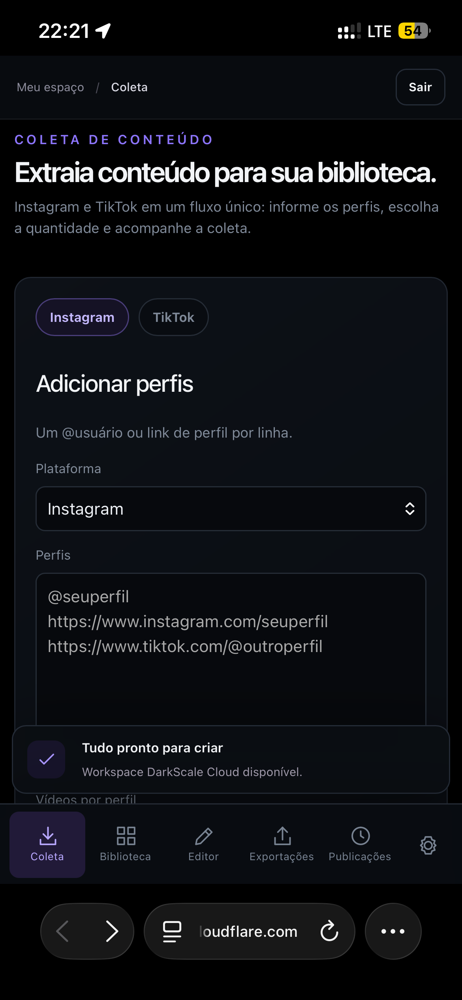
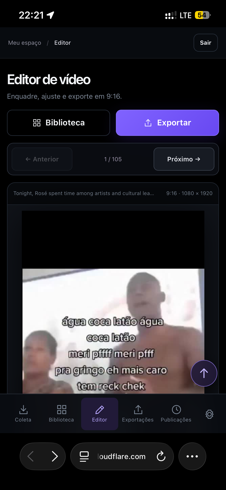
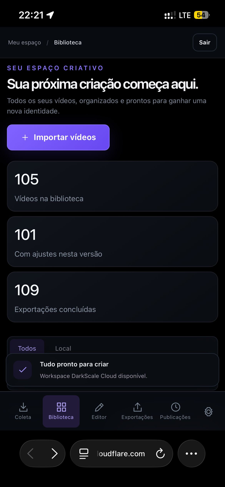
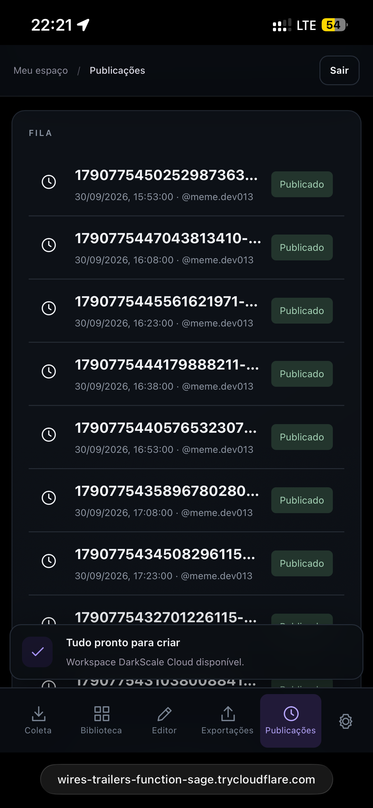
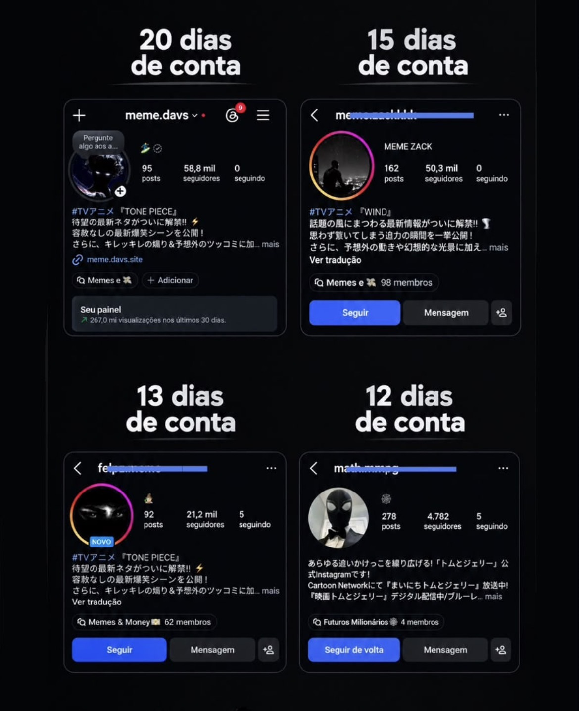

Escolha um perfil
Informe um perfil público do Instagram ou TikTok que será usado como referência de conteúdo.
Escolha um perfil público do Instagram, colete vídeos em massa, organize sua biblioteca, prepare e personalize conteúdos em lote e programe sua operação de publicação — tudo no DarkScale.


Informe um perfil público do Instagram ou TikTok que será usado como referência de conteúdo.
Reúna vários vídeos daquele perfil de uma vez e leve tudo para sua biblioteca.
Enquadre, ajuste e personalize vários conteúdos para a identidade e o formato da sua página.
Organize sua fila e automatize as publicações compatíveis com as integrações suportadas.
A edição pode ajudar a criar uma apresentação própria, mas não elimina direitos autorais de terceiros. Use conteúdos que você tenha direito ou permissão para reutilizar e respeite as regras das plataformas.
Coleta, biblioteca, editor, exportação e publicações ficam conectados no mesmo ambiente.


Anime, filmes, futebol, memes, curiosidades e outros nichos sem precisar aparecer.
Publique com mais consistência e teste mais formatos para aumentar suas oportunidades de alcançar grandes audiências.
Uma página com público pode ser usada para divulgar produtos, ofertas próprias ou de afiliados, respeitando as regras aplicáveis.
Estruture processos repetíveis para administrar mais de uma página sem começar tudo do zero diariamente.
Seguidores, alcance, vendas e viralização não são garantidos. Os resultados dependem do nicho, conteúdo, estratégia, frequência, audiência e distribuição do Instagram.
Exemplos fornecidos pela operação mostram contas novas que alcançaram milhares de seguidores.

Entre no grupo oficial para ver demonstrações, novidades e receber as informações da abertura comercial.
ENTRAR NO GRUPO DO WHATSAPP → Gratuito • sem obrigação de compra